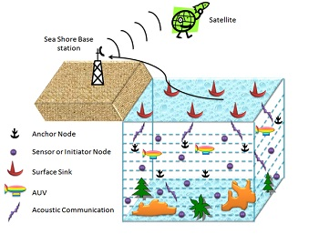
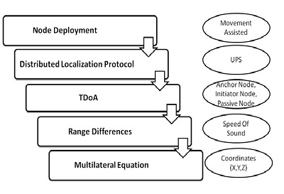
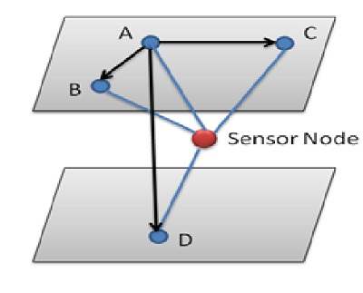
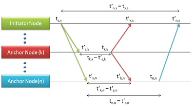

Distributed Localization Techniques
On-Demand Localization Procedure
AbstractIn this paper, we present a novel architecture for On-Demand Localization for autonomous deployment in UWSN to find the location and position of the sensor node deployed in underwater. Underwater sensor networks which contains initiator nodes and anchor nodes. Initiator nodes are nodes which initiates the request in order to find its own position with the help of anchor nodes. Request can be initiated by any initiator node at any time. Novel Architecture includes Node deployment, Distributed Localization Protocol, Ranging techniques to find the location and position of the initiator nodes. Multilateral equation is used to estimate for finding the distance among the sensor nodes.
Go to topNode deployment plays a vital role for underwater acoustic sensor networks, which provides network services like network topology control, routing, and boundary detection. Node deployments [1] consist of three classifications namely static deployment, self-adjustment deployment, movement-assisted deployment. Among these deployments we have to choose an efficient node deployment algorithm for implementation.
After the node deployment, localization technique has to be initiated with help of AUV (Autonomous Underwater vehicle). Traditional localization techniques like SBL and LBL [2], by using these combinations of two traditional techniques many localization protocols has been developed. In nowadays localization protocol is mainly classified in to Distributed localization protocol and Centralized localization protocol.
Transmission of information under the water can be done with the help of acoustic communication through the ocean [2], where as Electromagnetic waves travel much shorter distances in underwater than they do in air. So they are not suitable for proper communication. GPS-based localization schemes are not suitable for UWSN because high-frequency GPS signals don’t propagate well in water. UWSN is one of the enabling technologies for the development of ocean observation systems. Applications of UWSN like aquaculture, and include instrument monitoring, climate recording, predict natural disturbances under sea level, underwater survey missions, pollution control and study of marine life. UWSN consist of sensors and vehicle for the monitoring purpose. To find the location of particular initiator node, distance has to be calculated between initiator node and anchor node. Distance will be calculated using time based approaches.
In this article we focus on finding location and position of any initiator node at any time using localization technique, which is an active research topic, and a large number of localization protocols have been proposed recently. From early survey papers in [1] 2013 A Survey on Deployment Algorithms in Underwater Acoustic Sensor Networks, in [2] 2010 Localization Techniques for Underwater Acoustic Sensor Networks and discussed their suitability for UASNs. Our work is different than the previous survey paper, as we focus on recent localization techniques specifically designed for UWSNs. This article is organized as follows. In the next section we survey the node deployment techniques for UWSNs. We then discuss the localization protocols and point out the open issues. We conclude our article in the final section. The Novel Architecture diagram for autonomous deployment in UWSN is as shown in Above Fig.
Go to topThe novel architecture consist of five variants namely Node Deployment, Distributed Localization Protocol, TDoA, Range Differences and Multilateral Equation. The Novel Architecture diagram for autonomous deployment in UWSN
In node deployment [1] stage selecting the preferred node deployment algorithm among the three node deployment algorithms based on the requirement. Once the deployment is completed we need to initiate the localization process. Localization process can be initiated with the help of AUVs. Localization is done by combination of both LBL and SBL based localization techniques [2]. In the LBL technique acoustic transponders are deployed on either the seafloor around the area of operation to initiate the localization process, whereas in SBL technique, a device need to follow the underwater equipment and uses a short-range emitter to enable localization process the device may be AUVs.
Communication in under water is only possible with the use of acoustic communication. While finding the location GPS is not an efficient technique in underwater environment. After the communication has been established localization protocol has to be chosen, major classification are Distributed Localization protocol and Centralized Localization protocol further they are classified in to various types.
During Localization process range differences have calculated with the help of ranging methods or ranging techniques. Using the range difference apply it in mulitilateral equations we can able to estimate position on location of the particular sensor node with (x,y,z) coordinates.
Go to topIn this section we discuss about the node deployment algorithms. Sensor nodes, there are at least two types of sensor node in UWSNs they are sink node, which are at the surface of the water level and second is underwater sensor nodes this node may be anchor node, AUV, initiator node and surface gateway according to the deployment algorithms sensors are named.
In node deployment [1], first type is static deployment. Here, the nodes are static after the initial adjustments. [8] [9] Further they are classified into two types namely Random and Regular. In both classifications sensors doesn’t change their positions after the initial deployment [10] [11]. Self-Adjustment Deployment [13] [14] is the next type whereas here all the sensors have the ability to adjust their own positions in underwater environment even after the initial deployment. In this type of deployment sensor nodes can be able to adjust their depths. Using this we can able to achieve the high network connectivity over the coverage region. It classified into two types [15] [16] Uniform Coverage and Non-uniform Coverage. Last type is the Movement-assisted deployment [17] [18] in this technique AUVs (Autonomous underwater vehicle) is used. Here, sensor nodes are the mobile nodes so the energy consumption is very high. By using the Distributed localization protocol we can reduce the computation complexity, minimize travel time and distance.
Among the three types of node deployment we choose the third type Movement-assisted deployment because under the sea, water current may varies it will affect the node position and location in order to maintain the network topology and coverage connectivity sensor nodes needs to be movement-assisted. It supports both the localization techniques, distributed as well as centralized localization techniques. If a node lost its network connectivity in mean time the neighbor node maintains the coverage of the lost node without any overlapping by using movement-assisted deployment, after some time it comeback to the coverage area at that particular time it doesn’t know its own position and location, this paper focus on problems how node get its own location and position.
Go to topIn this section we discuss about the localization techniques. Localization techniques [2] are of two types Distributed localization techniques and Centralized localization techniques. Location of the sensor node can be identified using these localization techniques. In distributed localization techniques, each node computes its own location and positions individually there is no central coordination. The sensor node collects the localization information like neighbor nodes positions, anchor nodes positions, distance to the anchor nodes and distance to the neighbors. Using the collected localization information location estimation algorithm can be run individually in each node to find its location and positions.
In centralized localization technique, there is a central coordinator among the sensor nodes. The central coordinator collects the all localization related information and runs the location estimation algorithm then send back to the all the underwater sensor nodes. In distributed localization techniques bandwidth utilization is very less, whereas in centralized localization technique bandwidth utilization is very high and also needs to be synchronized. When the synchronization comes automatically it consumes more energy. By using the Distributed localization techniques we can reduce the computation complexity, minimize travel time and distance. So we choose Distributed localization techniques for estimating the location and positions of the node.
These two localization techniques are further classified into two Estimation based and Prediction based. The Estimation based technique compute the current location based on the most recent information of the particular sensor node, whereas the Prediction based technique compute the location based on previous location information and current location information. The Prediction based technique doesn’t provide the accurate values of position and location of the sensor node so we choose estimation based one.
Go to topThere are various types of localization protocols in Estimation based technique [2] they are, DNRL (Dive and Rise Localization protocol), MSL (Multi Stage Localization protocol), AAL (AUV Aided Localization protocol), LDB (Localization with Directional Beacons protocol), LSL (Large Scale Hierarchical Localization), UPS (Underwater Positioning Scheme protocol) [3], LSLS (Large Scale Localization Scheme), USP (Underwater Sensor Positioning protocol).
DNRL uses mobile anchors that are able to descend and ascend periodically and broadcast the messages in regular several intervals. It needs synchronization using ToA (one way ranging method). MSL uses anchor type as Non-propelled mobile anchors and reference nodes with ToA (one-way ranging) it needs synchronization. AAL uses AUV with ToA (two-way ranging), it doesn’t require synchronization. LDB uses AUV as same as ALL with free ranging technique, it is a silent way communication doesn’t require synchronization. LSL uses surface buoys and underwater anchors with ToA (one-way ranging) of iterative communication and it require synchronization. UPS uses stationary anchors with TDoA ranging technique, it is a silent way communication and doesn’t require synchronization. LSLS uses stationary anchors and reference nodes with TDoA ranging technique and it doesn’t require synchronization. USP uses Stationary anchors with active communication and it doesn’t require synchronization. Among these techniques we choose UPS (Underwater Positioning Scheme protocol) for the estimation of node location and position.
Advantages of UPS are UPS requires no synchronization, it utilizes very few anchor nodes, it provides silent way of communication, it has low computation overhead, it has low position error rate during the estimation. So UPS is the best protocol among the estimation based protocols.
Go to topIn this section we discuss about the silent Underwater Positioning scheme for effective underwater communication. Underwater acoustic localization can be broadly classified into two categories [3] range-based and range-free. Range based schemes measure the distances between number of anchor nodes via ToA, RSS, AoA and TDoA, then apply triangulation or multilateration to transform ranges into coordinates. Range-based schemes have higher accuracy in location estimation, whereas range-free schemes provide location estimation with higher error rate. UPS follows TDoA Localization Scheme for ranging techniques [2]. From figure 3, let us consider A, B, C and D are the anchor nodes; assume node A will be acts as the master node. Master anchor node A initiates the localization process by sending a beacon signals to the all other anchor nodes B, C and D. These beacon signals are not only hear by the anchor nodes also hear by sensor nodes. After receiving the beacon signal B, C, D replies to master anchor node A with time difference between received time of A’s beacon signal and the retransmission time of their beacon signals. These beacon signals are also hear by the sensor node.
The TDoAs are measured by the sensor node and converted to range differences using the speed of sound. These range differences are used in estimating the location and position of sensor nodes. An underwater sensor node doesn’t transmit any localization messages it only listen the beacon signals so, it is a silent way of communication. It doesn’t require synchronization[3].
The silent positioning scheme UPS deserves as follows. [2] First, it can significantly reduce bandwidth, therefore improve network throughput since node do not transmit any beacon for positioning purpose. This is particularly true when a large number of vehicles and sensors need to be positioned in a UWSN and consumes less energy. Silent positioning provides strong location privacy, which can help protect sensors/vehicles from being detected in critical applications.
Go to topThe source node or initiator node sends out an initiator message to obtain its position at time ts,s.[4] The initiator message consists of the request message for the anchor nodes (note it is just a request initiator message not a localization message). After initiating the request initiator node then goes into the listening mode, waiting for the beacons from the anchors to come in sequentially. It will wait for the time t’n,s – ts,s. All the anchor nodes receive the initiator message from initiator node. Upon receiving the initiator message at, anchor nodes enters to the listening mode and then decodes all the messages from all nodes, recording the arrival times as t’k,n. The initiator node receives the reply from node at time t’n,s. After the reception of the last anchor node, the source node analyzes the collected measurements and computes its own position. The passive node in the network which record the arrivals of the messages from the initiator and the anchor nodes using these measurements passive node compute its own location.
The distance between initiator node and anchor node can be calculated [4] as follows, consider anchor node located at coordinates (Xn,Yn,Zn) and node which initiate the localization process located at coordinates (Xi,Yi,Zi). Then the distance between initiator node and anchor node is calculated as Di,n and Dk,n.
There are three major sources of errors for time-based location detection schemes in UWSNs [3] receiver system delay, underwater multipath fading, and variable acoustic speed underwater. The receiver system delay is the transmission time duration from which the signal reaches the receiver antenna until the signal is completely decoded by the receiver. This time delay is determined by the receiver. The underwater multipath fading channel includes multipath propagation, speed of the receiver, interference with the surrounding objects, and the transmission signal bandwidth. In underwater environment some other parameters which affect the communication which includes temperature, salinity, underwater objects, pressure and clarity, motion behavior of receiver and transmission range.
Go to topOn-demand localization has been one of the fundamental challenges of UWSNs. In this paper we present a novel architecture for On-Demand Localization for Autonomous Deployment in UWSN to estimate the location and position of the sensor nodes under the water. We explained all the possible localization technique for location estimation and also the ranging techniques used to find the range differences using TDoA technique. Thus we estimate the location and position of the sensor node under the water.
Go to top